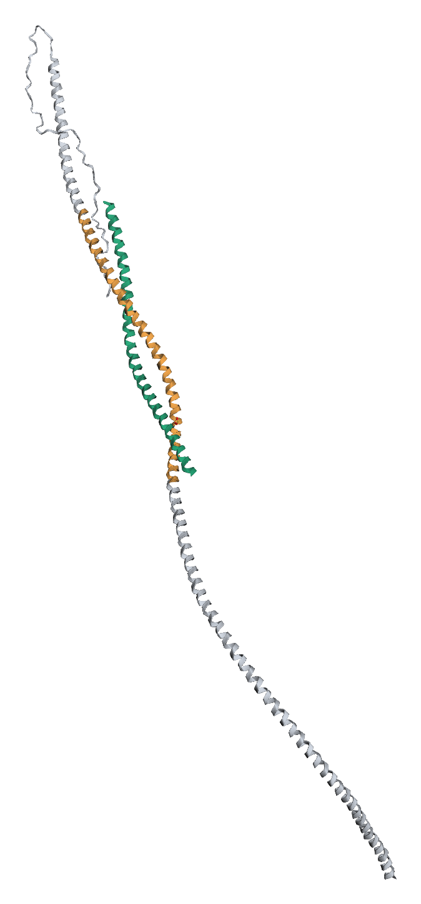

G034 — IL-14α / α-taxilin 机制专题报告
分泌性之谜 · B 细胞活化回路 · 致病微环境 · 胞内 STX4 运输轴假说
项目 G034 · 干燥综合征(pSS)
本报告回答一组直击核心的机制问题:IL-14α 是否为分泌蛋白?在何种细胞上过表达以刺激 B 细胞?如何活化 B 细胞?发生于什么微环境?其胞内与 α-taxilin(syntaxin)的结合对干燥症是否另有一条信号/病理通路?在什么细胞与组织中发生?全程标注诚信分级,并把结论落到 G034 的双轴药物设计上。
诚信分级:✅ 确证 ⚠️ 争议/假说 ❌ 未建立 引用格式:(作者 年份 期刊)。
一句话主线 不是经典分泌蛋白 ;而最初被命名为 IL-14 的分子 曾被报道为分泌型细胞因子 ——同一"基因"戴着两顶帽子,二者在最基本的生化性质上冲突。疾病通路很硬,分子身份很软。 这条裂缝决定了下游每一步的策略与验证闸门。
Q1 · IL-14α 是分泌性蛋白吗?——取决于"哪一个它"
原始 HMW-BCGF / "IL-14"(Ambrus/Fauci 生化–克隆) α-taxilin / TXLNA(P40222,你们的抗原) 分泌? ✅ 被描述为分泌型 53.1 kDa、成熟 483 aa、有 15 aa 信号肽 、3 个 N-糖位点;从 T 细胞/淋巴瘤上清纯化,积液中检出(PNAS 1993;Ford 1995 Blood )❌ 无信号肽 546 aa / ~62 kDa,胞质 coiled-coil 蛋白,经典分泌途径不分泌定位 细胞外(细胞因子) 细胞质(结合 syntaxin,调节囊泡运输)
诚实结论: 你们手上的抗原(TXLNA 210–546)按数据库注释没有信号肽、不是经典分泌蛋白 ;但被命名为 IL-14 的原始分子被报道为分泌型。数据库把二者等同,却在"分不分泌"上直接冲突。
那血清里为何有人测到它?——三种可能,均 ⚠️ 未证实
非经典/无信号肽分泌 (类似 IL-1β、FGF2、HMGB1 的 leaderless / 外泌体途径)——理论可能,但 TXLNA 从未被证明走此路。细胞死亡/损伤释放 ——自身免疫腺体中上皮/淋巴细胞死亡把胞质蛋白漏入胞外,完全合理。测到的其实是原始分泌型 IL-14 (与 taxilin 是不同分子)——若如此,"抗 taxilin 抗体"打不到真正致病的分泌因子。
🔑 头号验证闸门 — Liang 2021(pSS 血清 WB)、Sarkar 2020(RA 血浆 ELISA,AUC 0.97)报道胞外阳性 ,但 HPA 血浆 not-detected ,二者互相矛盾 。一条 pSS 血清 α-taxilin ELISA(n≥30 vs 对照)即可裁决"胞外池是否足量可及" ,并决定分流:抗体 / LYTAC 需胞外池;siRNA / PROTAC 不需 。
Q2 · 在什么细胞上过表达刺激 B 细胞?——产生细胞 ≠ 响应细胞
角色 细胞 依据 / 诚信 产生 IL-14α 活化 T 细胞(经典 BCGF 来源)、某些 B 淋巴瘤系;IL14αTG 鼠中由转基因人为驱动过表达(il14 plus 链 exons 3–10)
✅ Ambrus/Fauci;Shen 2006 J Immunol 被刺激(响应) 只作用于"活化 B 细胞" ,不作用于静息 B、不作用于 T;CLL/白血病 B 细胞组成型表达 ~90 kDa 受体 ,仅需占据小部分受体即被刺激✅ Ambrus 1988 J Immunol ;Uckun/Fauci JCI
机制上是一个自分泌/旁分泌的 B 细胞生长因子回路 :活化 T/B(或转基因)分泌 IL-14α → 作用于已上调受体的活化 B 细胞 → 选择性扩增这群(含自身反应性)B 细胞 → 高丙球血症、自身抗体、边缘区 B 细胞(MZB)扩增 。MZB 是不可约效应核心 (B 细胞特异敲 RBP-J 除 MZB → 全部 SS 表型消失;敲 Btk 除 B1 无效,Shen 2016 Clin Immunol )。
Q3 · 怎么活化 B 细胞?——~90 kDa 受体 → cAMP / Ca²⁺ / DAG
IL-14α 结合活化 B 细胞表面 ~90 kDa 受体 (¹²⁵I-交联成 150 kDa 复合物 = 60 kDa 配体 + 90 kDa 受体,Ambrus 1988)。
→ ↑cAMP (PGE 依赖)——主要调控受体表达 。
→ ↑胞内 Ca²⁺ + ↑DAG/肌醇 ——增殖信号主要走 Ca²⁺/DAG(PKC)分支 (JBC 第二信使研究)。
→ 驱动活化 B 细胞增殖/克隆扩增 (而非分化为浆细胞),表现为 B 细胞生长因子。
❗ 受体身份未确证 — 受体只被生化表征 (90 kDa 蛋白 + 150 kDa 交联 + 阻断性单抗 BA5 + Scatchard 高亲和),基因从未克隆/测序,30+ 年数据库无 IL-14R 。→ "IL-14α 结合哪个受体、结合表位在哪"无法从文献理性锁定 ,直接决定中和抗体只能"功能优先"而非"表位理性设计"。
Q4 · 什么微环境会发生?——腺体异位淋巴结构 + 型I IFN 场
微环境要素 作用 证据(转基因鼠) 唾液腺/泪腺内异位淋巴组织(TLO)/生发中心样结构 T–B 高密度互作、局部细胞因子浓集,IL-14α 自/旁分泌回路运转场所 ✅ Shen 系列组织学边缘区(脾)+ 被募集到腺体的 MZB 不可约效应核心 ✅ RBP-J KO 全表型消失(Shen 2016)型I IFN(IFN-α)放大场 把局部反应放大为系统性 + 成瘤 ✅ IFNR⁻/⁻ 缺后期腮腺/肺损伤 + 淋巴瘤(Shen 2013)LTα 效应模块 驱动淋巴浸润 + TLO 形成 + 成瘤(腺体"落地破坏"效应器) ✅ ×LTα⁻/⁻ → 无浸润/无瘤(Shen 2010)
→ 这是一个"炎症腺体内、受 IFN 加持、以 MZB 为核心、由 LTα 落地破坏"的异位淋巴微环境 。IL-14α 是其中的上游 B 细胞点火者 ,而非直接"弄干"腺体的效应分子。
Q5 · 胞内 α-taxilin↔syntaxin 结合,对干燥症是否另有通路?
✅ 已确证的分子生化: 结合游离 syntaxin-1A/3A/4A (不结合已进入 SNARE 复合物者),负向调控 syntaxin → 抑制 SNARE 组装 → 影响囊泡运输 / Ca²⁺ 依赖的调节性胞吐 / 受体循环 。它是 syntaxin 的"隔离型负调节子"(Nogami;Higashi & Shirataki 2022)。
🔑 一条很诱人、但未被证实的"直接致干"假说 ⚠️ Syntaxin-4 / syntaxin-3 是唾液腺/泪腺腺泡细胞顶端调节性胞吐的核心 SNARE ——唾液/泪液的水与蛋白分泌依赖 STX4 介导的囊泡融合。若腺泡细胞内 α-taxilin 过量 → 隔离游离 syntaxin-4 → 削弱 SNARE 胞吐 → 直接减少唾液/泪液分泌(sicca) 。这条通路根本不需要免疫破坏就能"弄干"腺体 ,在同一分子上叠加了第二个、胞内的致病机制,且与"腺泡功能障碍先于/独立于淋巴浸润"的部分 pSS 临床观察吻合。这是本项目最有价值的原创机制钩子 。
其他假说性钩子(证据更弱)
免疫细胞内的分泌/运输失调 ⚠️ :SNARE 运输也支配 B/浆细胞的抗体与细胞因子分泌、BCR 内吞与抗原呈递、受体循环。与创新免疫信号节点的连接 ⚠️ :Open Targets PPI 给出 TBK1(0.77)、NMI(0.72)、TNIP1(0.72,恰为 SLE GWAS 位点)等伙伴,提示 taxilin 可能挂靠 innate/IFN 信号(相关性,非因果)。
❗ 关键诚信区分 "IL-14α 细胞因子功能(B 细胞生长)→ SS" (✅ ),并未测试 taxilin–syntaxin 运输功能 是否致病。转基因过表达同一蛋白,但疾病被归因于分泌型细胞因子作用,不是 胞内运输功能。因此:胞外/细胞因子轴 = ✅ 有因果证据 (分子身份 ⚠️);胞内/taxilin–syntaxin 轴 = ⚠️ 生化确证、但其干燥症相关性完全是假说、待验证 。
Q6 · 胞内轴会在什么细胞类型/组织发生?
细胞 / 组织 相关 syntaxin 为何相关 诚信 唾液腺/泪腺腺泡上皮细胞 STX4 / STX3(顶端调节性胞吐) 直接控制唾液/泪液分泌 → α-taxilin 过量最可能"直接致干"的位置 ⚠️ 假说,最高价值 B 细胞 / 浆细胞 STX3/4 等 抗体/细胞因子分泌、BCR 运输、抗原呈递 ⚠️ 更间接 神经/内分泌样分泌细胞 STX1A 经典调节性胞吐(taxilin 最初报道处) ✅ 生化 / SS 相关性弱广谱表达(HPA) — taxilin 组成型广泛表达,上述可叠加 ✅ 表达 / ⚠️ 功能
验证胞内轴的最干净实验: 在腺泡细胞模型 中过表达/敲低 α-taxilin,测 syntaxin-4 SNARE 组装 + Ca²⁺ 诱导的胞吐/分泌通量 。一旦成立,即为 Axis-2(抗 syntaxin 界面 358–384 / C373 )阻断抗体、siRNA、PROTAC 提供真正的"腺体本位"药理学理由——而不只是免疫轴。
双轴机制图
同一分子 α-taxilin / IL-14α 的两条可能致病轴
轴 1 · 胞外 · 细胞因子(免疫)
✅ 转基因鼠因果证据强 / ⚠️ 分子身份软
活化 T/B 或转基因 分泌 IL-14α ↑
结合 ~90 kDa 受体 (活化 B 细胞)
❌ 受体基因从未克隆(仅生化 + BA5)
↑cAMP(PGE)· ↑Ca²⁺ · ↑DAG/PKC
活化 B 细胞增殖 → MZB 扩增(不可约核心)
LTα → 腺体淋巴浸润/TLO/成瘤
型I IFN → 后期/系统放大
干燥症:腺体破坏 + 自身抗体
轴 2 · 胞内 · 运输(假说)
⚠️ 生化确证,SS 相关性待验证
腺泡上皮内 α-taxilin 过量 ↑
隔离 游离 syntaxin-4/3
✅ 界面 = P40222 355–443(结构定位)
抑制 SNARE 复合物组装
削弱 Ca²⁺ 依赖的顶端调节性胞吐
唾液/泪液 水+蛋白 分泌 ↓
(不需免疫破坏即可"直接致干")
干燥症:腺体分泌功能障碍(sicca)
图 1. 同一分子的两条可能致病轴。轴 1(左,胞外/免疫) = 转基因鼠因果证据强的 B 细胞生长因子回路;轴 2(右,胞内/运输) = 生化确证但 SS 相关性待验证的 SNARE 胞吐抑制假说,可"直接致干"。两轴在临床终点(干燥症)汇合。
结构落点:Axis-2 靶面(syntaxin 结合界面)

图 2. α-taxilin 核心与 syntaxin(STX4-H3)界面(Boltz-2.1 复合物,iPTM 0.63)。结构定位 syntaxin 结合界面 = P40222 355–443 ,其中三重独立收敛的黄金锚点 358–384(含 C373) 同时是 Axis-2 阻断抗体表位 + 共价 PROTAC 位点 + syntaxin 竞争界面——正是轴 2 假说若成立时的可成药靶面。
把六问落到 G034 设计
机制结论 对设计的含义 胞外池是否足量可及未决(Q1) 决定性 ELISA 定分流:抗体/LYTAC(需胞外)vs siRNA/PROTAC(不需)。这是全项目头号未决闸门。受体身份未知、结合表位未定(Q3) 中和抗体只能功能优先 :现有 slides 仅 ELISA 结合筛选,必须增补功能中和 assay (B 细胞/MZB 增殖抑制),否则只筛到结合抗体。 结构引导优先区(Q3/结构) ✅ 优先折叠 coiled-coil 核心 210–484 ;❌ 避开 C 端无序尾 485–546(= Peng2009 先前技术检测抗体表位 ≈ 503–523,仅检测未中和)。胞内 STX4 轴假说(Q5/Q6) 若腺泡细胞验证成立,为 Axis-2 抗体 / siRNA / 共价 PROTAC(C373) 提供"腺体本位"药理学理由;siRNA/PROTAC 对胞内轴天然合适(不依赖胞外池)。 身份矛盾贯穿(Q1/Q5) 抗 taxilin 抗体未必 中和真正致病的分泌型 IL-14 → 功能中和 + 转基因鼠体内 PoC 是不可省的验证闸门 ,binding 阳性远不够。
诚信小结
✅ 疾病因果通路 (IL-14α→MZB→LTα/IFN→腺体损伤+淋巴瘤)在转基因鼠中证据强、可分阶段拆解。❌ IL-14 受体 从未分子鉴定(仅 90 kDa 生化 + BA5 阻断抗体)。⚠️ IL-14α = taxilin 与最初分泌型 53 kDa cDNA 矛盾,分泌性/身份未确证。⚠️ 胞内 STX4 运输轴 生化确证,但"直接致干"的干燥症相关性是假说,需腺泡细胞实验验证。抗体策略据此应功能优先 、避开 C 端无序尾/先前技术、优先保守 coiled-coil 核心表位,并以功能中和 + 体内 PoC 为验证闸门。